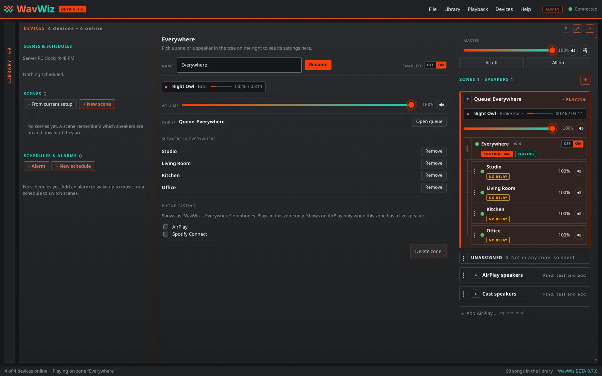
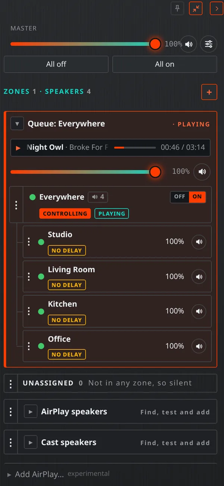
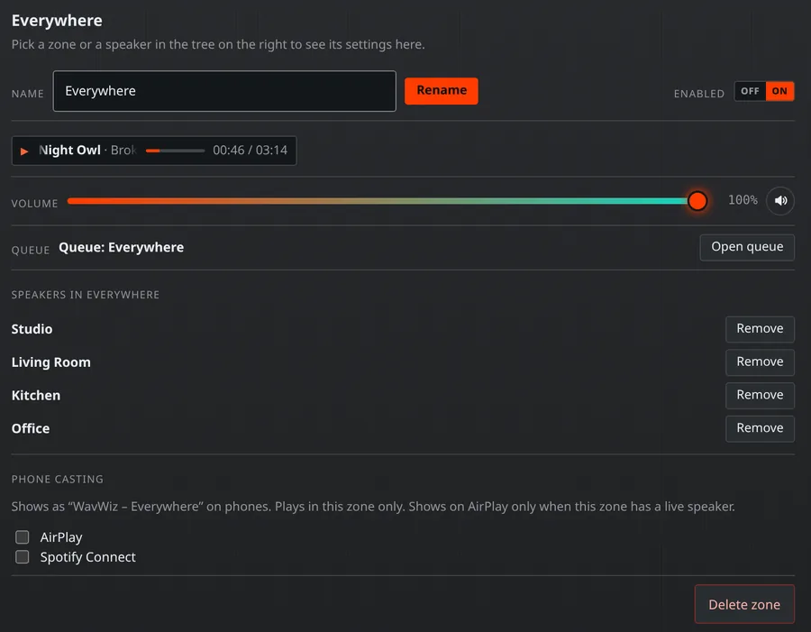
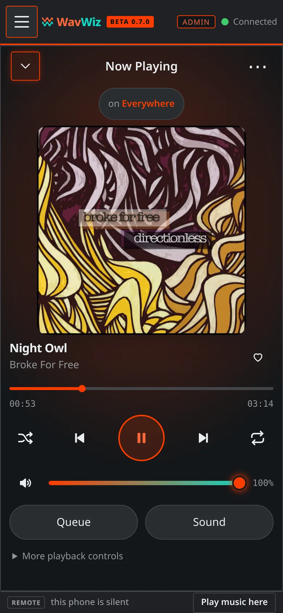
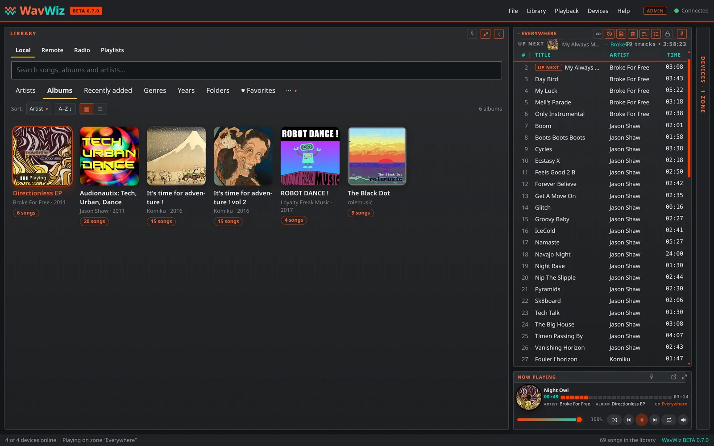
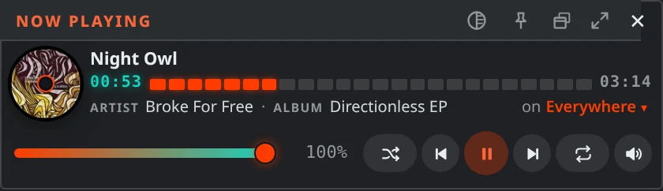
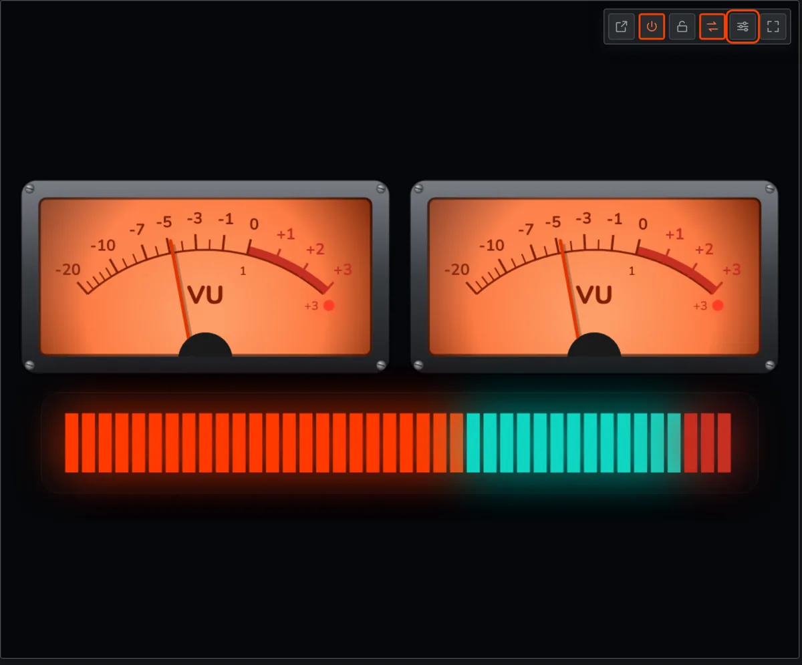
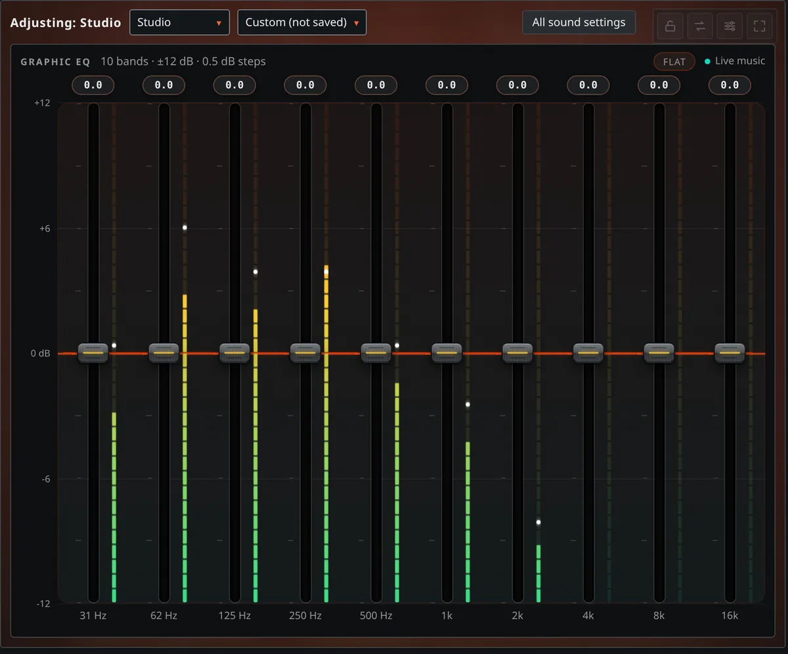

Windows PCs
The WavWiz Player plays to any output Windows can use. A vintage amp or receiver can hook up to that PC’s analog or optical output today.
One mesh for every speaker you own.
WavWiz links Windows PCs, phones, and streamers and receivers with AirPlay or Cast into one free multi-room system, with no cloud and no lock-in. Native Linux and Raspberry Pi players are planned.
Free (MIT)64-bit Windows 10 or 11Release notes
Speakers
One mesh for every speaker you own, including streamers and receivers with AirPlay or Cast. Status tags tell you what works today, what is still in testing, and what is planned.
Plays to any output Windows can use.
Any modern browser on a phone, tablet, Mac or Linux PC.
Works today on a Windows server. Not on Linux or Docker yet (still planned).
Streamers and receivers with AirPlay 1.
Off by default. Still being tested. HomePod and Apple TV are not supported.
Available since 0.7.0, still in testing.
Via a Windows Player or a phone. Bluetooth adds lag, so set a delay.
Unofficial, off by default, and needs Premium. Windows server only.
Library and radio sources.
Control playback with a token. Optional custom component, not on HACS yet.
Official Player app planned for 0.8.0. Not verified on real Raspberry Pi hardware.
Planned for 0.8.0. Not available yet.
The WavWiz Player plays to any output Windows can use. A vintage amp or receiver can hook up to that PC’s analog or optical output today.
Open the page in a browser. No app to install. Plays through the built-in speaker or a paired Bluetooth speaker.
Streamers and receivers with AirPlay, such as WiiM, can join a zone. AirPlay 1 output works. AirPlay 2 output is experimental and off by default. HomePod and Apple TV are not supported.
Bluetooth adds lag, whether it is on a Windows Player or a phone. Give that device a delay.
Streamers and receivers with Google Cast, such as WiiM, can join a zone. Available since 0.7.0, still in testing.
An official Player app (x64 and arm64) is planned for 0.8.0. It is not available yet, and is not verified on real Raspberry Pi hardware.
Hook one up to a PC’s analog or optical output today. A Pi and DAC DIY guide is planned after the Pi Player exists.
Keep what you have. Mix brands in one system. Line them up so they play as one.
WavWiz is software for the speakers you already own. There is no new ecosystem to switch to.
Put a PC, a phone and an AirPlay or Cast speaker in the same zone, or give each room its own queue.
Every speaker gets its own delay and volume so they play in sync, plus EQ on WavWiz Players. AirPlay and Cast speakers can’t be auto-calibrated yet — set those delays by ear.

How it works
Install it on a Windows 10 or 11 PC that stays on, or run the optional Linux or Docker server. Point it at a folder or NAS share if you have a library — it’s optional.
Use what you already own. Works with what you own shows what plays today, what’s in testing, and what’s planned.

Group speakers into zones. Set each speaker’s delay by ear, or use Calibrate speakers with a PC mic. AirPlay and Cast speakers are set by ear for now.

Play your library, internet radio, or AirPlay from an iPhone, iPad or Mac to one zone or to “WavWiz – Everywhere.” Your phone is the remote.

Zones
Multi-room
Group speakers into zones like Kitchen or Office. Each zone can play its own queue, and you can drag songs into any of them from the Library or your phone.
Or all together
Link zones to share one queue and play in sync, or split a zone off when it wants its own music. AirPlay from an iPhone, iPad or Mac to one zone, or to “WavWiz – Everywhere.” Scenes, schedules and a Jukebox zone cover the rest.
Inside the app

Features
Every device plays the same stream against a shared clock. Each speaker has its own volume and a 0–1000 ms delay you can set live. Calibrate speakers can measure WavWiz Players with a PC mic or phone; AirPlay and Cast are set by ear for now.
Local folders and NAS shares, internet radio, playlists, gapless albums and ReplayGain/R128 leveling. Rip CDs to FLAC on the server PC; tag lookups wait for your approval. Optional Subsonic or Navidrome libraries too.
In the Windows Player, stream that PC’s own sound or its microphone to any zone. New in 0.7.2. See What’s new.
Everyone can add songs from a phone. Save scenes, run schedules and alarms, or give guest requests a Jukebox zone.
iPhone, iPad and Mac can AirPlay to a zone or to “WavWiz – Everywhere.” Playing out to streamers and receivers with AirPlay or Cast is covered in Works with what you own.
Off by default. Needs your own Spotify Premium account. Unofficial.
Eight visualizers for a big screen, and ten themes or your own colors. See EQ & visualizers.
No cloud account, no analytics, no telemetry, and WavWiz doesn’t open ports to the internet. Optional internet features (radio, covers, Spotify Connect) can be switched off. For access away from home, use your own Tailscale.
What’s new in v0.7.2 · Nov 21, 2026
New in 0.7.2
Only the Windows Player can send that PC's own sound (This PC · Speakers) or its microphone to any zone, the same way AirPlay already can.
New in 0.7.2
Hold Announce to talk over the house. The music ducks, then fades back up when you let go. It works in the Windows Player window and in a browser on a phone.


From 0.7.0
Streamers and receivers with Google Cast show up in a Cast speakers card, right below AirPlay speakers in Devices.
From 0.7.0
The headless server now also builds for 64-bit ARM, as a linux-arm64 download and in a multi-arch Docker image (amd64 + arm64).
From 0.6.8
Your saved stations come first, in the same tiles and list look as the rest of the Library.
From 0.6.8
Adding a speaker and lining up timing are both clearer in Devices.
Since 0.5.0
An AirPlay speaker can now be a WavWiz output. Add it to a zone and it follows play, pause, seek, skip and group moves with the rest of the house, with its own volume and delay.
Since 0.5.0
A flatter Now Playing with bigger art and transport, and the zone picker right next to the title. Then mix and match the look in Settings › Appearance.
linux/amd64 only), so a NAS or mini PC can run the house. A 64-bit ARM build followed in 0.7.0 (intended for Raspberry Pi; not yet verified on real Pi hardware).docker pull vdubbin74/wavwiz-server:0.7.2 (multi-arch since 0.7.0: amd64 and arm64). Compose setup is in the Docker guide, including a Windows Docker Desktop walkthrough. Not the full Windows app: Docker is a server only: no mic, no CD ripping, no Windows share logins, no Linux Player, no AirPlay receiver yet, and no AirPlay 2 or HomePod output. Since 0.7.0 it can play through the host’s sound card if you pass in /dev/snd. On Windows Docker Desktop, discovery is weaker (no host networking). Pair a Windows Player for PC speakers. See the limits.AirPlay 2 output is experimental in this beta, Google Cast output is still in testing, and the ARM64 server isn’t verified on real Raspberry Pi hardware yet. See the 0.7.2 release notes and the changelog for every fix.
EQ & visualizers
Flip the center screen between a live EQ you can drag and a visualizer that moves to the beat.


Real WavWiz 0.7.0 captures in Midnight Neon, playing music. The EQ shows live level meters behind every fader.
Roadmap
The goal: every speaker, old or new, in one synced mesh. Next up is audiophile accuracy and an official Linux Player. Everything below that isn’t marked shipped is planned, not available yet, and there are no dates.
Out now in 0.7.2: live sources, Announce and phone drag. See What’s new. AirPlay 2 output is experimental, Google Cast is still in testing, and the ARM64 server is not yet verified on real Raspberry Pi hardware.
Coming next in 0.7.3 (planned)
Cleaner, more accurate playback so boosts don't cost you volume, and a way to switch off all of WavWiz's processing.
Upcoming in 0.8.0 (planned)
The goal: every speaker, old or new, in one synced mesh. A planned official Player for Linux and Raspberry Pi, plus tools to measure and correct each speaker in the room.
Shipped · 0.6.0
Run the WavWiz server on almost any always-on box, not just a Windows PC.
linux/amd64), so a NAS or x86-64 mini PC can run the house. Since 0.7.0: a 64-bit ARM build (linux/arm64) intended for Raspberry Pi 4/5, published but not yet verified on real Raspberry Pi hardware.vdubbin74/wavwiz-server:0.7.2 and :latest, multi-arch amd64 + arm64). See the Docker guide for compose, including a Windows Docker Desktop walkthrough.Docker is a server only. Pair a Windows Player for PC speakers. See the Docker guide for compose and a Windows Docker Desktop walkthrough.
Docker has the web UI, zones, scenes, schedules, alarms, Jukebox and Remote, and plays to Windows Players, phones and browsers, Cast and AirPlay 1 speakers, and (since 0.7.0) the host’s own sound card via /dev/snd. It does not have a microphone on the Docker host, an AirPlay receiver (still planned), CD ripping, Windows share logins, a Linux Player, or AirPlay 2 or HomePod output. On Windows Docker Desktop, discovery is weaker (no host networking); use published ports. Full limits list.
Shipped · 0.7.0
Google Cast speakers join the house, and the server builds for 64-bit ARM.
linux-arm64 download and multi-arch Docker image, intended for Raspberry Pi 4/5. Not yet verified on real Pi hardware.Also planned
Filling the gaps 0.7.0 left open. Still planned; not tied to a version yet.
Later (planned)
Goal · 1.0.0
Plans can change; features ship when they're ready.
FAQ
Yes. WavWiz is free and open source under the MIT license. There's nothing to buy, no subscription and no account to create.
Yes. Open the WavWiz page in your phone’s browser on your home Wi-Fi and tap Play music here. No app to install. If the phone is paired with a Bluetooth speaker, the music comes out there. Bluetooth adds lag, so give that phone a delay. On iPhone, tap the page once to start the sound and keep it open. See Works with what you own.
Yes. First open the WavWiz page from your server on your phone or tablet. iPhone or iPad (Safari): tap Share, then Add to Home Screen, then Add. Android (Chrome): tap the three-dot menu, then Add to Home screen or Install app. You get a WavWiz shortcut that opens straight to your house, so you don't have to remember the address.
Yes. Any Windows 10 or 11 PC can run WavWiz Player and play through whatever output Windows can use. A Mac, Chromebook or older laptop can join in a browser. See Works with what you own.
Every device plays the same stream against a shared clock. Bluetooth speakers and TVs add lag, so each device gets its own delay (0 to 1000 ms). Set it by ear, or let Calibrate speakers measure a WavWiz Player with a PC mic or phone. AirPlay and Cast can’t be auto-calibrated yet. No sync measurements have been published yet.
No. You need one always-on Windows PC (or an optional Linux or Docker server) and the speakers you already have. See Works with what you own.
Yes, through a Windows PC running WavWiz Player: HDMI, optical, USB or Bluetooth, plus any other output Windows can play to. Streamers and receivers with Google Cast can join a zone (since 0.7.0, still in testing). Streamers and receivers with AirPlay can be added over AirPlay (AirPlay 2 is experimental and off by default). HomePod and Apple TV are not supported. DLNA / UPnP renderer output is planned for 0.8.0 and is not available yet. See Works with what you own.
Yes. Anyone on your network can add songs from their own phone. For parties, Jukebox mode puts a QR code on a big screen. Guests scan it and add songs with no app and no sign-in, within your rules: allowed music, songs per guest, vote to skip and more. The Jukebox screen runs in a web browser on a PC, laptop or tablet. A PC or laptop connected to the TV works best; smart-TV browsers are still in testing.
Yes. As an admin, set a max-volume lock on any device. Nothing can raise that device past the cap, and turning it down always works.
The server needs a 64-bit Windows 10 (October 2018 Update or newer) or Windows 11 PC that stays on, and everything else comes in the installer. Speakers need WavWiz Player on Windows or any modern browser on the same home network.
WavWiz is a public beta. AirPlay 2 output is experimental and off by default. Google Cast output (since 0.7.0) is still in testing. Calibrate speakers can’t measure AirPlay or Cast yet; set those delays by ear. The Linux/Docker arm64 server, intended for Raspberry Pi 4 and 5, has not been verified on real Pi hardware, and there is no official Linux or Pi Player yet (planned for 0.8.0). There is no AirPlay receiver on Linux yet (still planned). HomePod and Apple TV are not supported. DLNA / UPnP renderer output is planned for 0.8.0 and is not available yet. Smart-TV browsers are still in testing; a PC connected to the TV is the reliable path. On iPhone, tap the page once to start the sound. See the roadmap and Works with what you own.
The installer isn't code-signed yet, so SmartScreen doesn't recognize it. If you downloaded it from the official WavWiz releases page on GitHub, click More info, then Run anyway. To double-check the file, compare its SHA-256 checksum with the one on the release page.
WavWiz is a hobby project by vdubbin74, who builds his own speakers and keeps an always-on Windows PC at home. He came up with WavWiz, set the spec, makes the design decisions and tests the builds at home. AI coding agents wrote the code, and AI helped write the docs and this site. The source is on GitHub under the MIT license.
Report bugs on GitHub Issues. For questions, ideas and setup help, use WavWiz Discussions on GitHub.
WavWiz is free. If it makes your house sound better, a tip helps keep it going.
LTC
ltc1qx4y3ncgjzgl6nydfwu3wzp7lwzmf2cysacr64d
PEP
Pby4S9GQQhgEhJ5Sm7A6xLnTVcGuVnvfqQ
The Dogecoin-fork Pepecoin, not the Ethereum PEPE token.
Double-check the address in your wallet before sending. Crypto transactions can't be reversed.
Not into crypto? A good bug report helps just as much.
v0.7.2 BetaReleased Nov 21, 2026Release notesSource on GitHub
Windows installer: WavWiz-Setup-0.7.2.exe (104,992,447 bytes).
SHA-256: 48032FCDB6B0CA460AAE7D4B97C990E30B1D5565776A540E54181C0E7F8C7E32
Linux server: linux-x64 or linux-arm64 (for Raspberry Pi 4/5; not yet verified on real Pi hardware).
Docker: vdubbin74/wavwiz-server:0.7.2 (amd64 + arm64). Checksums: SHA256SUMS.txt.
Public beta. The installer isn't code-signed yet, so Windows SmartScreen will warn. Check the SHA-256 on the release page.